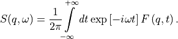

9. Analysis: Scattering
Below is a list of Plugins contained in this section. They are all used to calculate neutron spectroscopy observables from the trajectory.
These plugins will be explored in depth in further sections, however, before that, it is important to understand how MDANSE performs these analyses. A part of that are Q vectors, which are used to perform these analyses. An in-depth discussion of this aspect is present in Appendix 2.
9.1. Theory and background
The quantity of interest in neutron scattering experiments with thermal
neutrons is the dynamic structure factor, S(q,  ), which is
closely related to the double differential cross-section [7],
), which is
closely related to the double differential cross-section [7],
(9.1)
. The double differential cross section is defined as the number of neutrons which are scattered per unit time into the solid angle interval
(9.2)
and into the energy interval
(9.3)
It is normalized to d, dE, and the flux of the incoming neutrons,
(9.4)
Here N is the number of atoms, and k ≡ |k| and k0 ≡ |k0| are the wave numbers of scattered and incident neutrons, respectively. They are related to the corresponding neutron energies by
(9.5)
and
(9.6)
where  is the neutron mass. The arguments of the dynamic structure factor,
is the neutron mass. The arguments of the dynamic structure factor,
 and , are the momentum and energy transfer in units of
and , are the momentum and energy transfer in units of
 , respectively:
, respectively:
(9.7)
(9.8)
The modulus of the momentum transfer can be expressed in the scattering
angle  , the energy transfer, and the energy of the
incident neutrons:
, the energy transfer, and the energy of the
incident neutrons:
(9.9)
The dynamic structure factor contains information about the structure and dynamics of the scattering system [16]. It can be written as
(9.10)
F(q, t) is called the intermediate scattering function and is defined as
(9.11)
(9.12)
The operators  in Eq.
in Eq.  are the position
operators of the nuclei in the sample. The brackets
are the position
operators of the nuclei in the sample. The brackets
 denote a quantum thermal average and the time dependence of the position
operators is defined by the Heisenberg picture. The quantities
denote a quantum thermal average and the time dependence of the position
operators is defined by the Heisenberg picture. The quantities
 are the scattering lengths of the nuclei
which depend on the isotope and
the relative orientation of the spin of the neutron and the spin of the
scattering nucleus. If the spins of the nuclei and the neutron are not
prepared in a special orientation one can assume a random relative
orientation and that spin and position of the nuclei are uncorrelated.
The symbol
are the scattering lengths of the nuclei
which depend on the isotope and
the relative orientation of the spin of the neutron and the spin of the
scattering nucleus. If the spins of the nuclei and the neutron are not
prepared in a special orientation one can assume a random relative
orientation and that spin and position of the nuclei are uncorrelated.
The symbol 
appearing in
(9.13)
denotes an average over isotopes and relative spin orientations of neutron and nucleus.
Usually, one splits the intermediate scattering function and the dynamic structure factor into their coherent and incoherent parts which describe collective and single particle motions, respectively. Defining
(9.14)
(9.15)
the coherent and incoherent intermediate scattering functions can be cast in the form
(9.16)
(9.17)
Rewriting these formulas, MDANSE introduces the partial terms as:
(9.18)
(9.19)
where:
(9.20)
(9.21)
where nI, nJ, Nspecies, I,coh,inc
and J,coh,inc are defined in Section ??.
The corresponding dynamic structure factors are obtained by performing
the Fourier transformation defined in Eq.  .
.
An important quantity describing structural properties of liquids is the static structure factor, which is defined as
(9.22)
In the classical framework the intermediate scattering functions are interpreted as classical time correlation functions. The position operators are replaced by time-dependent vector functions and quantum thermal averages are replaced by classical ensemble averages. It is well known that this procedure leads to a loss of the universal detailed balance relation,
(9.23)
and also to a loss of all odd moments
(9.24)
The odd moments vanish since the classical dynamic structure factor is
even in , assuming invariance of the scattering process with respect to
reflections in space. The first moment is also universal. For an atomic
liquid, containing only one sort of atoms, it reads
(9.25)
where M is the mass of the atoms. Formula
47
shows that the
first moment is given by the average kinetic energy (in units of
) of a particle which receives a momentum transfer
 . Therefore,
. Therefore,
 is called the recoil moment. A number of ‘recipes’ has been suggested
to correct classical dynamic structure factors for detailed balance and
to describe recoil effects in an approximate way. The most popular one
has been suggested by Schofield [17]
is called the recoil moment. A number of ‘recipes’ has been suggested
to correct classical dynamic structure factors for detailed balance and
to describe recoil effects in an approximate way. The most popular one
has been suggested by Schofield [17]
(9.26)
One can easily verify that the resulting dynamic structure factor
fulfils the relation of detailed balance. Formally, the correction  is correct to first order in . Therefore, it cannot be used
for large q-values which correspond to large momentum transfers
. This is actually true for all correction
methods which have suggested
so far. For more details we refer to Ref.
[18].
is correct to first order in . Therefore, it cannot be used
for large q-values which correspond to large momentum transfers
. This is actually true for all correction
methods which have suggested
so far. For more details we refer to Ref.
[18].
MDANSE computes the partial S(Q)’s as the Fourier transform of the partial g(r), corresponding to the Faber-Ziman definition:
(9.27)
(49)
The total S(Q) is computed as a weighted sum similar to the one used for the total g(r). In the case of the analysis ‘X-ray Static structure factor’, the Q-dependence of the atomic form factors is taken into account in this weighted sum.
Again, Soper has provided experimental data (table 4 in ISRN Physical Chemistry, 279463 (2013), given in file soper13_fx.dat). Here a source of confusion is that the data can be normalized in different ways (see Soper’s paper). Using the normalization II in that reference we have that:
(9.28)
Where S(Q) would be the static structure factor (going to 1 at large Q) computed by MDANSE. Therefore, even after using MDANSE we should recalculate the x-ray observable using the atomic factors.
9.2. Current Correlation Function
Theory and implementation
Current correlation function is typically used to study the propagation of excitations in disordered systems. In MDANSE, its longitudinal and transverse components are calculated, which are related to density fluctuations and propagating shear modes respectively. Formalism and other details can be found in Ref [19].
GUI
available for trajectories only

interpolation mode (only applicable when interpolation order is set to something different than ‘no interpolation’)
Format: str
Default: automatic
Description: the method that will be used to interpolate velocities. All modes give identical results but differ in speed and memory usage. The following modes are available:
one-time in-memory interpolation
In this mode, all velocities are interpolated once, at the beginning, and stored in memory. This mode is the fastest but requires large amounts of memory. It is recommended for use with small trajectories. When used with large trajectories, it is advisable that a computer with sufficient memory is used.
repeated interpolation
In this mode, all velocities are interpolated in each loop over Q-shells. Therefore, it is slower, though less memory is required. However, the largest memory usage depends on the composition of the sample; it is most efficient when all elements have equal number of particles in the sample, and the least when one element has the majority of particles. Thus, it is advisable that this mode is used with medium trajectories with even distribution of elements, especially when the computer has only an HDD. When used with large trajectories, please ensure that the computer has sufficient memory.
one-time disk interpolation
In this mode, all velocities are interpolated once, at the beginning, and stored on disk. This makes it slow but with little memory requirement. This balance of speed and memory can be further altered by using the ‘number of preloaded frames’ option. This mode is meant for when the computer has insufficient memory for the other modes and is advisable to be used with large trajectories. Further, since disk is involved, it is advisable that the computer has an SSD, and that the operating system’s temp folder is on that disk.
automatic
In this mode, MDANSE selects one of the above modes to be used that should be best given the hardware. It does this by estimating the memory requirements and comparing them to the total memory of the computer.
number of preloaded frames (only applicable when ‘interpolation mode’ is set to ‘one-time disk interpolation)
Format: int
Default: 50
Description: this option allows for the optimisation of the ‘one-time disk interpolation’ interpolation mode. It governs the number of frames for which the velocities are loaded from disk to memory at once. Thus, if it is set to 1, the interpolated velocities of all particles are loaded into memory one frame at a time, and if it is 50, 50 frames worth of interpolated velocities are loaded, and then no loading occurs for the next 49 frames, after which the next 50 are loaded. This way, the speed and memory usage can be adjusted; the larger the number, the faster (though with diminishing returns) but the more memory required.
Please note that this option can be set to a value of -1, which will cause all the interpolated velocities for all the particles of one element to be loaded into memory at once. This way, the memory usage is comparable to the ‘repeated interpolation’ interpolation mode. Further, when SSD is used, the analysis can be faster than in the ‘repeated interpolation’ mode.
9.3. Dynamic Coherent Structure Factor
Theory and implementation
Please refer to Scattering Theory and
Background for more details about the
theoretical background related to the dynamic coherent structure factor.
In this analysis, MDANSE proceeds in two steps. First, it computes the
partial and total intermediate coherent scattering function using
equation  . Then, the partial
and total dynamic coherent structure factors are obtained by performing
the Fourier Transformation, defined in Eq. , respectively on
the total and partial intermediate coherent scattering functions.
. Then, the partial
and total dynamic coherent structure factors are obtained by performing
the Fourier Transformation, defined in Eq. , respectively on
the total and partial intermediate coherent scattering functions.
MDANSE computes the coherent intermediate scattering function on a rectangular grid of equidistantly spaced points along the time-and the q-axis, respectively:
F
(9.29)
(9.30)
where Nt is the number of time steps in the coordinate time
series, Nq is a user-defined number of q-shells,
Nspecies is the number of selected species, nI the
number of atoms of species I, I the weight for species I
(see Section ?? for more details) and
(9.31)
is the Fourier transformed particle density for species I defined as,
(9.32)
The symbol
(9.33)
in Eq.  denotes an average
over q-vectors having approximately the same modulus
denotes an average
over q-vectors having approximately the same modulus
(9.34)
. The particle density must not change if jumps in the particle
trajectories due to periodic boundary conditions occur. In addition, the
average particle density,  , must not change. This can be achieved by choosing q-vectors on a
lattice which is reciprocal to the lattice defined by the MD box. Let
b1, b2, b3 be the basis vectors
which span the MD cell. Any position vector in the MD cell can be
written as
, must not change. This can be achieved by choosing q-vectors on a
lattice which is reciprocal to the lattice defined by the MD box. Let
b1, b2, b3 be the basis vectors
which span the MD cell. Any position vector in the MD cell can be
written as
(9.35)
with x’, y’, z’ having values between 0 and 1. The primes indicate that
the coordinates are box coordinates. A jump due to periodic boundary
conditions causes x’, y’, z’ to jump by  . The set of dual basis
vectors b1, b2, b3 is defined by
the relation
. The set of dual basis
vectors b1, b2, b3 is defined by
the relation
(9.36)
If the q-vectors are now chosen as
(9.37)
where k,l,m are integer numbers, jumps in the particle trajectories
produce phase changes of multiples of  in the Fourier transformed
particle density, i.e. leave it unchanged. One can define a grid of
q-shells or a grid of q-vectors along a given direction or on a
given plane, giving in addition a tolerance for q. MDANSE looks
then for q-vectors of the form given in Eq. 61 whose moduli
deviate within the prescribed tolerance from the equidistant q-grid.
From these q-vectors only a maximum number per grid-point (called
generically q-shell also in the anisotropic case) is kept.
in the Fourier transformed
particle density, i.e. leave it unchanged. One can define a grid of
q-shells or a grid of q-vectors along a given direction or on a
given plane, giving in addition a tolerance for q. MDANSE looks
then for q-vectors of the form given in Eq. 61 whose moduli
deviate within the prescribed tolerance from the equidistant q-grid.
From these q-vectors only a maximum number per grid-point (called
generically q-shell also in the anisotropic case) is kept.
The q-vectors can be generated isotropically, anisotropically or along
user-defined directions. The 
may be negative if they represent normalized coherent scattering lengths, i.e.
(9.38)
Negative coherent scattering lengths occur in hydrogenous materials
since 
Is negative [20]. The density-density correlation is computed via the FCA technique described in the section on Spatial Density.
GUI
available for trajectories only


9.4. Dynamic Incoherent Structure Factor
Theory and implementation
Please refer to Scattering Theory and Background section for more details about the theoretical background related to the dynamic incoherent structure factor. In this analysis, MDANSE proceeds in two steps. First, it computes the partial and total intermediate incoherent scattering function Finc(q, t) using equation 41. Then, the partial and total dynamic incoherent structure factors are obtained by performing the Fourier Transformation, defined in Eq. 33, respectively on the total and partial intermediate incoherent scattering function.
MDANSE computes the incoherent intermediate scattering function on a rectangular grid of equidistantly spaced points along the time-and the q-axis, respectively:
(9.39)
where Nt is the number of time steps in the coordinate time
series, Nq is a user-defined number of q-shells,
Nspecies is the number of selected species, nI the
number of atoms of species I, I the weight for species I
(see Section ?? for more details) and
(9.40)
is defined as:
(9.41)
The symbol  in Eq. 58
denotes an average
over q-vectors having approximately the same modulus
in Eq. 58
denotes an average
over q-vectors having approximately the same modulus
(9.42)
. The particle density must not change if jumps in the particle trajectories due to periodic boundary conditions occur. In addition, the average particle density, N/V, must not change. This can be achieved by choosing q-vectors on a lattice which is reciprocal to the lattice defined by the MD box. Let b1, b2, b3 be the basis vectors which span the MD cell. Any position vector in the MD cell can be written as
(9.43)
with x’, y’, z’ having values between 0 and 1. The primes indicate that the coordinates are box coordinates. A jump due to periodic boundary conditions causes x’, y’, z’ to jump by ∓1. The set of dual basis vectors b1, b2, b3 is defined by the relation
(9.44)
If the q-vectors are now chosen as
(9.45)
where k,l,m are integer numbers, jumps in the particle trajectories produce phase changes of multiples of 2π in the Fourier transformed particle density, i.e. leave it unchanged. One can define a grid of q-shells or a grid of q-vectors along a given direction or on a given plane, giving in addition a tolerance for q. MDANSE looks then for q-vectors of the form given in Eq. 61 whose moduli deviate within the prescribed tolerance from the equidistant q-grid. From these q-vectors only a maximum number per grid-point (called generically q-shell also in the anisotropic case) is kept.
The q-vectors can be generated isotropically, anisotropically or along user-defined directions.
The correlation functions defined in 58 are computed via the FCA technique described in Spatial Density section. Although the efficient FCA technique is used to compute the atomic time correlation functions, the program may consume a considerable amount of CPU-time since the number of time correlation functions to be computed equals the number of atoms times the total number of q-vectors. This analysis is actually one of the most time-consuming among all the analysis available in MDANSE.
GUI
available for trajectories only


9.5. Elastic Incoherent Structure Factor
Theory and implementation
The Elastic Incoherent Structure Factor (EISF) is defined as the limit of the incoherent intermediate scattering function for infinite time,
(9.46)
Using the above definition of the EISF one can decompose the incoherent intermediate scattering function as follows:
(9.47)
where Finc‘(q,t) decays to zero for infinite time. Taking now the Fourier transform it follows immediately that
(9.48)
The EISF appears as the amplitude of the elastic line in the neutron scattering spectrum. Elastic scattering is only present for systems in which the atomic motion is confined in space, as for solids. To understand which information is contained in the EISF we consider for simplicity a system where only one sort of atoms is visible to the neutrons. To a very good approximation this is the case for all systems containing a large amount of hydrogen atoms, as biological systems. Incoherent scattering from hydrogen dominates by far all other contributions. Using the definition of the van Hove self-correlation function Gs(r, t) [20],
(9.49)
which can be interpreted as the conditional probability to find a tagged particle at the position r at time t, given it started at r = 0, one can write:
(9.50)
The EISF gives the sampling distribution of the points in space in the limit of infinite time. In a real experiment this means times longer than the time which is observable with a given instrument. The EISF vanishes for all systems in which the particles can access an infinite volume since Gs(r, t) approaches 1/V for large times. This is the case for molecules in liquids and gases.
For computational purposes it is convenient to use the following representation of the EISF [21]:
(9.51)
where Nspecies is the number of selected species, nI
the number of atoms of species I, I,inc the weight for
species I (see Section ?? for more details) and for each species the
following expression for the elastic incoherent scattering function is
(9.52)
This expression is derived from definition 62 of the EISF and expression 41 for the intermediate scattering function, using that for infinite time the relation
(9.53)
holds. In this way the computation of the EISF is reduced to the computation of a static thermal average. We remark at this point that the length of the MD trajectory from which the EISF is computed should be long enough to allow for a representative sampling of the conformational space.
MDANSE allows one to compute the elastic incoherent structure factor on a grid of equidistantly spaced points along the q-axis:
(9.54)
where Nq is a user-defined number of q-shells, the values for qm are defined as
(9.55)
, and for each species the following expression for the elastic incoherent scattering function is:
(9.56)
Here the symbol
denotes an average over the q-vectors having the same modulus
qm. The program corrects the atomic input trajectories for
jumps due to periodic boundary conditions.
GUI
available for trajectories only


9.6. Gaussian Dynamic Incoherent Structure Factor
Theory and implementation
The MSD can be related to the incoherent intermediate scattering function via the cumulant expansion [11], [22]
(9.57)
where Nspecies is the number of selected species, nI
the number of atoms of species I, I,inc the weight for
species I (see Section ?? for more details) and
(9.58)
The cumulants
(9.59)
are identified as
(9.60)
(9.61)

The vector nq is the unit vector in the direction of q. In the Gaussian approximation the above expansion is truncated after the q2-term. For certain model systems like the ideal gas, the harmonic oscillator, and a particle undergoing Einstein diffusion, this is exact. For these systems the incoherent intermediate scattering function is completely determined by the MSD. MDANSE allows one to compute the total and partial incoherent intermediate scattering function in the Gaussian approximation by discretizing equation 71:
(9.62)
with for each species the following expression for the intermediate scattering function:
(9.63)
(9.64)
Nt is the total number of time steps in the coordinate time series and Nq is a user-defined number of q-shells. The (q, t)-grid is the same as for the calculation of the intermediate incoherent scattering function (see Dynamic Incoherent Structure Factor). The quantities
(9.65)
and
(9.66)
are the mean-square displacements, defined in Equations 5 and 6, respectively. They are computed by using the algorithm described in the Mean Square Displacement section. MDANSE corrects the atomic input trajectories for jumps due to periodic boundary conditions. It should be noted that the computation of the intermediate scattering function in the Gaussian approximation is much ‘cheaper’ than the computation of the full intermediate scattering function, Finc(q, t), since no averaging over different q-vectors needs to be performed. It is sufficient to compute a single mean-square displacement per atom.
GUI
available for trajectories only


q shells
from
Format: int
Default: 0
Description: <insert>
to
Format: int
Default: 10
Description: <insert>
by step of
Format: int
Default: 1
Description: determines the periodicity of which values are used and which are skipped. 1 means that all values are used, 2 means every other one is, etc.
9.7. Neutron Dynamic Total Structure Factor
available for trajectories only

9.8. Structure Factor From Scattering Function
available for analysis results only
it appears in all analysis results, even for non-scattering analyses which cannot be used to compute this